5 Section Examples
5.1 Sectional Constant Calculation Example
5.1.1 H-Beam (HBeam-400x200x8x13.hf2d)
Separate calculation depending on whether there is a fillet or not.
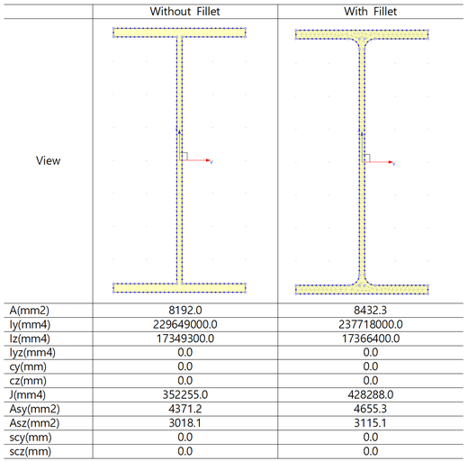
Fig. 11. Sectional Constant Calculation for H-Beam5.1.2 Rectangular Section with a Hole (hole.sec)
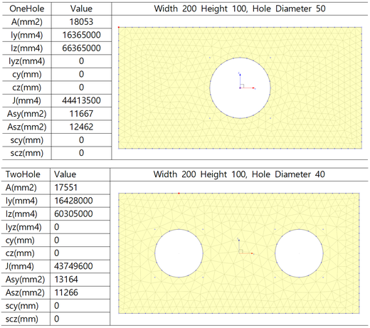
Fig. 12. Rectangular Section with a Hole5.1.3 Tapered Section (IGrider.hf2d)
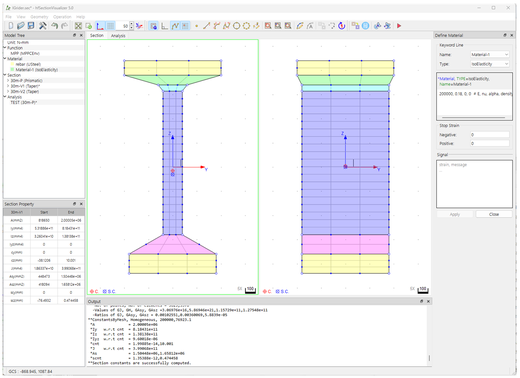
Fig. 13. Tapered Section5.1.4 Composite Section (RCBeam.hf2d)
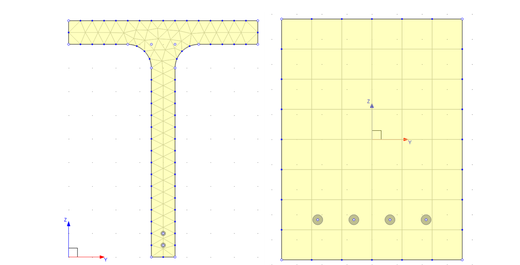
Fig. 14. Composite Section5.2 Singly Reinforced RC Beam
Performed flexural analysis of a rectangular singly reinforced beam with B=280, H=550. The compressive strength of the concrete is 24 MPa, and SD400, 3-D25 rebars were used. For the tensile zone of the concrete, the tensile strength was assumed to be 1/10 of the compressive strength, and a cut-off model was used, which neglects the strength after reaching the tensile strength. The secondary stiffness of the rebar was also ignored.
Fig. 15. Singly Reinforced RC Beam (from Udongyun et al., Reinforced Concrete, 3rd edition, Example 5-10)
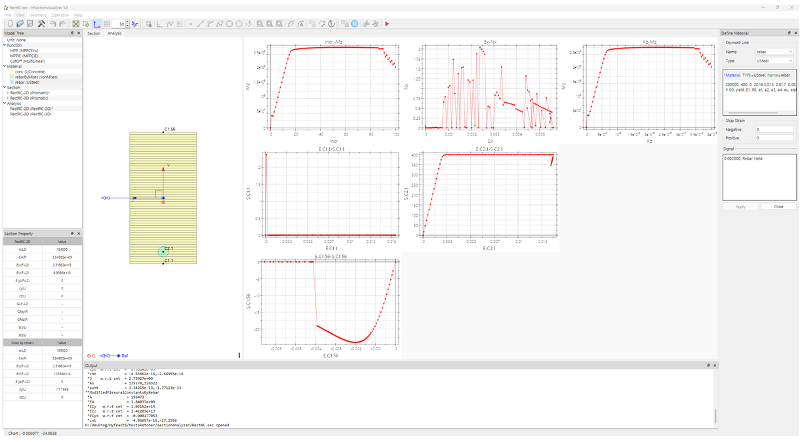
Fig. 16. Execution OverviewList. 3. RectRC.hf2d
*Function, TYPE=MPPCEnv, Name=MPP
24, 23025, 0.002, 0.004, 24, 0.004
*Function, TYPE=MPPCIE, Name=MPPIE
MPP, 0.002
*Function, TYPE=MultiLinear, Name=CutOff
0, 0
0.0001042, 2.4
0.0001042, 0
*Material, TYPE=UGeneric, Name=conc
Compression, MPP, MPPIE
Tension, CutOff, Secant
*Material, TYPE=vonMises, Name=rebarByMises
200000, 0, 0, 0 # E, nu, alpha, density
400, 0, 0 # yield, H, theta
*Material, TYPE=USteel, Name=rebar
200000, 400, 0, 20,18.5,0.15, 0.01,7, 0.08, 0, 0
# E0, yield, E1, R0, a1, a2, a3, a4, eu, alpha, density
*Section, Type=Beam, Name=RectRC-2D
*Cell, TYPE=Layer,Stack, Mat=conc
-550/2, 280
550/2, 280, 55
*Cell, TYPE=Point, Mat=rebar
1, -225, 0, 1520
*SectionSignal
conc, 0.0001042, "Concrete Tesile Failure"
rebar, 0.002, "Rebar Yield"
*SectionAnalysis, Name=RectRC-2D, Section=RectRC-2D, Output=Preselect
*SectionStep, ExtLoad=0,4e-05,NK, Inc=100
*SectionAnalysis, Name=RectRC-3D, Section=RectRC-3D, Ref=90,0,0, Output=Preselect
*SectionStep, ExtLoad=0,4e-05,NK, Inc=100
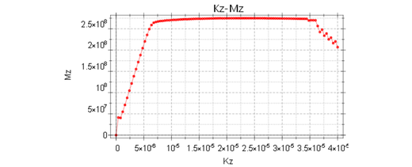
Fig. 17. Moment-Curvature Curve (Unit: N-mm)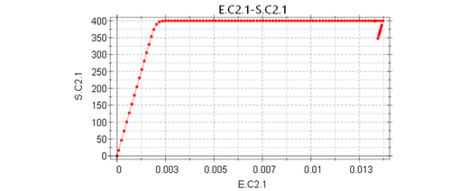
Fig. 18. Stress-Strain Curve of the Outer Rebar (Unit: N-mm)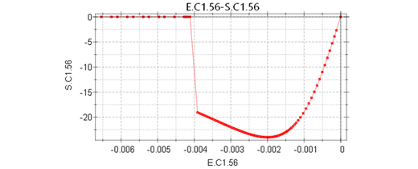
Fig. 19. Stress-Strain Curve of Concrete at the Compressed Edge (Unit: N-mm)5.3 RC Column with Seismic Details
This axial force and flexural analysis was performed for a column cross-section with seismic details. The concrete strength is 24 MPa, and 36-D25 SD300 rebars were used. The confinement pressure of the confined concrete was assumed to be 1.5 MPa, from which the maximum strength (fccp) is calculated to be 30 MPa, and the maximum strain is assumed to be 0.01. The tensile zone of the concrete assumed a strength of 1.826 MPa and a tension cut-off. The secondary stiffness of the rebar was assumed to be 0.01282 of the initial stiffness. The axial force for the analysis was 2000 kN.
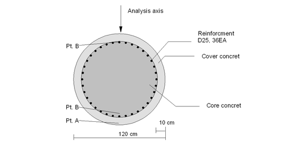
Fig. 20. Cross-Section of a Column with Seismic Details (Lee Jaehun, "Seismic Design of Reinforced Concrete Piers", 2000.)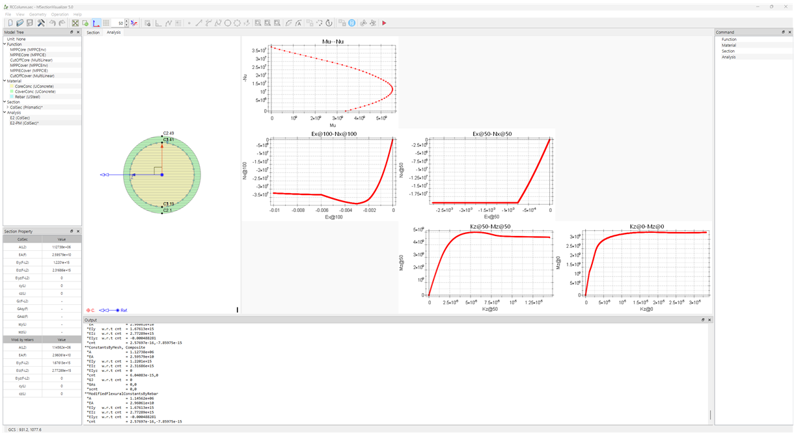
Fig. 21. Execution OverviewList. 4. RCColumn.hf2d
*Function, TYPE=MPPCEnv, Name=MPPCore
24, 23025, 0.002, 0.01, 33.07, 0.01
*Function, TYPE=MPPCIE, Name=MPPIECore
MPPCore, 0.00577917
*Function, TYPE=MultiLinear, Name=CutOffCore
0, 0
0.0007926, 1.825
0.0007926, 0
*Function, TYPE=MPPCEnv, Name=MPPCover
24, 23025, 0.002, 0.003, 24, 0.006
*Function, TYPE=MPPCIE, Name=MPPIECover
MPPCover, 0.002
*Function, TYPE=MultiLinear, Name=CutOffCover
0, 0
0.0007926, 1.825
0.0007926, 0
*Material, TYPE=UGeneric, Name=CoreConc
Compression, MPPCore, MPPIECore
Tension, CutOffCore, Secant
*Material, TYPE=UGeneric, Name=CoverConc
Compression, MPPCover, MPPIECover
Tension, CutOffCover, Secant
*Material, TYPE=USteel, Name=Rebar
200000, 400, 2564, 20,18.5,0.15, 0.01,7, 0.08, 0, 0
# E0, yield, E1, R0, a1, a2, a3, a4, eu, alpha, density
*Section, Type=Beam, Name=ColSec
*Cell, TYPE=Layer,Circle, Mat=CoreConc
500, 0, 20, 20
*Cell, TYPE=Layer,Circle, Mat=CoverConc
600, 500, 4, 20
*Cell, TYPE=Point,Circle, Mat=Rebar
500, 506.7, 0, 36
*SectionStop
CoreConc,-0.01,
Rebar,,0.08
*SectionSignal
CoreConc, 0.0007926, "Core concrete tensile failure"
CoverConc, 0.0007926, "Cover concrete tensile failure"
CoverConc, -0.003, "Cover concrete compressive failure"
Rebar, 0.002, "Rebar Yield"
*SectionAnalysis, Name=E2, Section=ColSec, Output=Preselect
*SectionStep, ExtLoad=-2e+06,0,NM, Inc=1
*SectionStep, ExtLoad=-2e+06,5e-05,NK, Inc=100
*SectionAnalysis, Name=E2-PM, Section=ColSec, Output=Preselect
*SectionStepPM, MaxDeform=-0.01,3.33333e-05 Inc=1000 PMPoints=50
*SectionStepPM, MaxDeform=-0.01,0.02/600, Inc=1000, PMPoints=50
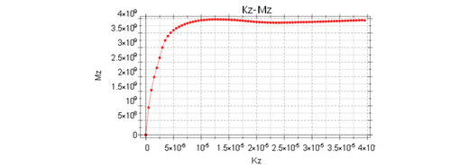
Fig. 22. Moment-Curvature Curve from Analysis E2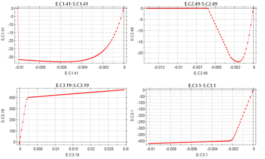
Fig. 23. Stress-Strain Curves at Key Material Points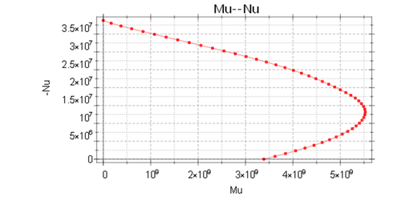
Fig. 24. PM Diagram5.4 UHPC Beam
Flexural analysis was performed for a UHPC beam member with the shape shown in Fig. 25.
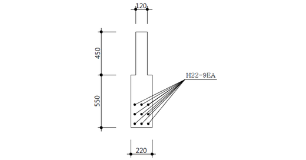
Fig. 25. SC120f Beam MemberThe material model for UHPC is as shown in Fig. 22, and the various material constants are as follows:
- Design Strength: \(f_{ck}\) = 120 MPa
- Allowable Tensile Strength: \(f_{tk}\) = 7 MPa
- Modulus of Elasticity: \(E_c\) = 40,000 MPa
- Characteristic Length: \(\frac{L_{eq}}{h_{beam}} = 0.8 \left[ 1 - \frac{1}{(1.05 + 6 \frac{h_{beam}}{l_{ch}})^3} \right]\)
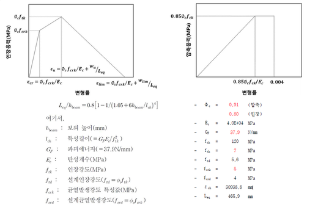
Fig. 26. Stress-Strain Curve of UHPC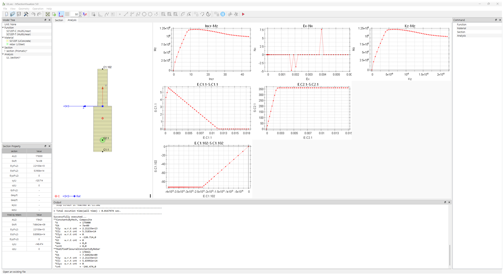
Fig. 27. Execution OverviewList. 5. UL.hf2d
# UHPC beam
#
# Unit : N-mm
#
# fck = 120 MPa, fcrk = 5 MPa, ftk = 7 MPa
# phic= 0.91(Compression), 0.8(Tension)
# Ec = 40000 MPa
# wu = 0.3 mm
# Leq = 465.8786 mm
*Function, TYPE=MultiLinear, Name=SC120f-C
0., 0.
0.85*0.91*120/40000, 0.85*0.91*120
0.004, 0.85*0.91*120
*Function, TYPE=MultiLinear, Name=SC120f-T
0., 0.
0.8*5/40E3, 0.8*5
0.8*5/40E3+0.3/465.8786, 0.8*7
0.8*5/40E3+5.3/465.8786, 0.
*Material, Type=UGeneric, Name=SC120f
Compression, SC120f-C
Tension, SC120f-T,Secant
# Yield = 400 MPa , zero 2nd moduls,
*Material, Type=USteel, Name=rebar
200E3, 400*0.9, 0, 20,18.5,0.15
*SectionStop
SC120f,-0.004,
rebar,-0.12,0.12
# Et = 0. steel assumed
*Section, TYPE=Beam, Name=section
*Cell, TYPE=Layer,Stack, Mat=SC120f
-550, 220, ToDirectForm
0, 220, 55
0, 120, 0
450, 120, 45
*Cell, TYPE=Point, Mat=rebar
1, 450-860, 0, 3421.194
*SectionAnalysis, Name=UL, Section=section
*SectionOutput, TYPE=All
*SectionStep, ExtLoad=0.,0.00005,NK, Inc=100
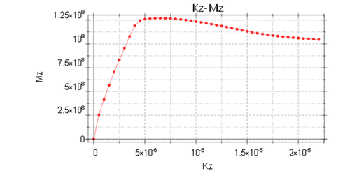
Fig. 28. Moment-Curvature Curve of UHPC5.5 RC Beams and Prestressed Beams under Axial Force
For program verification, the analysis of a prestressed beam under axial force, as presented in the textbook by Michael P. Collins et al. (1991), was performed.
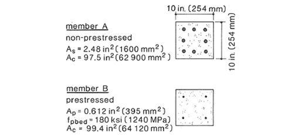
Fig. 29. RC Beams and Prestressed Beams under Axial Force (Figure 4-4 from Collins et al.'s 1991 textbook)Reference
Michael P. Collins, Denis Mitchell (1991), “Prestressed Concrete Structures,” Prentice Hall.
List. 6. P1.hf2d
# Unit : N-mm
# Verification sample :
# Prestress COncrete Structures by Michael P. Collins, and Denis Mitchell, Figure 4-4
#
## Concrete model
*Function, TYPE=MultiLinear, Name=concC
0., 0
0.0005, 15.09375
0.001, 25.875
0.0015, 32.34375
0.002, 34.5
0.0025, 32.34375
0.003, 25.875
0.003, 0.
*Function, TYPE=MultiLinear, Name=concT
0., 0.
2*0.0005/15.09375, 2.
2*0.0005/15.09375, 0.
*Material, Type=UGeneric, Name=conc
Compression, concC
Tension, concT,Secant
## Rebar model
*Material, Type=vonMises, Name=rebar
200000.
400 # TYPE=Value, yield, H, theta, Kinf, K0, delta
## Tendon model
*Material, Type=vonMises, Name=tendon
200000.
1655 # TYPE=Value, yield, H, theta, Kinf, K0, delta
## Section A
*Section, TYPE=Beam, Name=memberA
*Cell, TYPE=Layer,Stack, Mat=conc
-254/2, 254
254/2, 254, 2
*Cell, TYPE=Point, Mat=rebar
1,0.,0.,1600.
## Section B
*Section, TYPE=Beam, Name=memberB
*Cell, TYPE=Layer,Stack, Mat=conc
-254/2, 254
254/2, 254, 2
*Cell, TYPE=Point, Mat=tendon
1, 0,0, 395 # id, z, z, A
## Set stop strain
*SectionStop
conc,-0.003,
rebar,-0.12,0.12
tendon, -0.2, 0.2
*SectionSignal
conc, 0.0001042, "Concrete Tesile Failure"
rebar, 0.002, "Rebar Yield"
*SectionAnalysis, Name=P1-A-T, Section=memberA
*SectionStep, ExtLoad=0.003,0.,EM, Inc=100
*SectionAnalysis, Name=P1-A-C, Section=memberA
*SectionStep, ExtLoad=-0.003,0.,EM, Inc=100
*SectionAnalysis, Name=P1-B-T, Section=memberB
*SectionStep, ExtLoad=0.,0.,NM, Inc=10
InitialStress, 2, 1240 # pretension
*SectionStep, ExtLoad=0.003,0.,EM, Inc=50
*SectionAnalysis, Name=P1-B-C, Section=memberB
*SectionStep, ExtLoad=0.,0.,NM, Inc=1
InitialStress, 2, 1240 # pretension
*SectionStep, ExtLoad=-0.003,0.,EM, Inc=50
## Section B - post
#*SectionAnalysis, Name=P1-B-TPost, Section=memberB
# *SectionStep, ExtLoad=0.,0.,NM, Inc=10
# Stress, 2, 1240 # posttension
# *SectionStep, ExtLoad=0.003,0.,EM, Inc=50
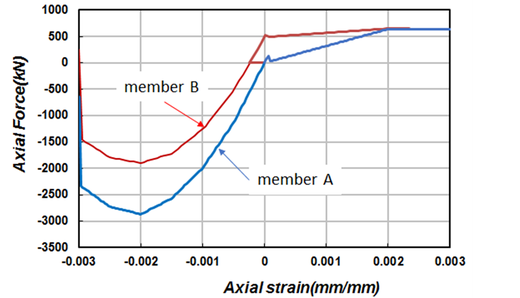
Fig. 30. Analysis Results of RC and Prestressed Beams under Axial Force5.6 PHC Pile
The PHC pile is a prestressed hollow circular member. In this case, an analysis was conducted on a member of type A with a diameter of 500 mm. According to the KS standard, it is required that the crack and failure moments must exceed a certain level through bending tests under no axial force and under three stages of applied axial force. Here, an analysis of the failure moment was conducted.
| Name | Axial Force (kN) | Failure Moment (KS Standard, kN·m) | Failure Moment (Analysis, kN·m) |
|---|---|---|---|
| N0 | 0 | 155 | 169.4 |
| N1 | 882.9 | 304.1 | 328 |
| N2 | 1766 | 421.8 | 454.4 |
| N3 | 2649 | 496.4 | 536.8 |
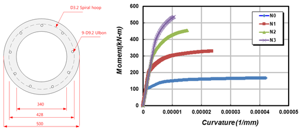
Fig. 31. PHC500A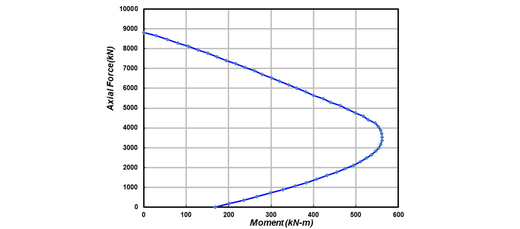
Fig. 32. PM Analysis Result of PHC500AList. 7. PHC500A.hf2d
# K500E
# Unit : N-mm
#################################################
# Material model data (UNIT = N-mm)
#################################################
# KDS-2026-C80-LST-EX and KDS-2026-C80-LST-UL are local section material names in this example, not DB item names.
# Concrete DB item names are used in concrete envelope function data lines, for example KDS-2026-C80.
# KDS-2026-C80 : KDS's 80 MPa concrete model for nonlinear analysis
# KDS-2026-C80-LST-EX : KDS's 80 MPa concrete model for sectional analysis on extreme event state (phi=1., no tension)
# KDS-2026-C80-LST-UL : KDS's 80 MPa concrete model for sectional analysis on ultimate state (phi=0.65, no tension)
# SD600L : SD600 Rebar less than D22 for nonlinear analysis or extreme event state (phi = 1.)
# SD600L-0.9 : SD600 Rebar less than D22 for nonlinear analysis or ultimate event state (phi = 0.9)
#################################################
#################################################
# KDS-2026-C80N : KDS's 80 MPa concrete model for nonlinear analysis
# EC2CEnv DB input supports KDS-2026-C<fck> or EC2-2004-C<fck>.
# This KDS-2026 example keeps direct numeric input.
# *Function, TYPE=MaekawaTEnv, Name=KDS-2026-C80-T
# KDS-2026-C80, ToDirectForm
#
# The direct numeric lines below preserve the original example response.
*Function, Type=EC2CEnv, Name=KDS-2026-C80-C
86., 41270.9464, 0.00279, 0.0029 # fcm, Ec, eco, ecu
*Function, TYPE=MultiLinear, Name=KDS-2026-C80-T
0., 0.
5.845031943/41270.9464, 5.845031943
5.845031943/41270.9464, 0.
*Material, TYPE=UGeneric, Name=KDS-2026-C80
Compression, KDS-2026-C80-C, Plastic
Tension, KDS-2026-C80-T, Secant
#################################################
# KDS-2026-C80-LST-EX : KDS's 80 MPa concrete model for sectional analysis on extreme event state (phi=1., no tension)
*Function, TYPE=ParabolaCEnv, Name=KDS-2026-C80-LST-EX-C
80., 1.22, 0.0024, 0.0029, 0.85 # fck, n, eco, ecu, alpha
*Material, TYPE=UGeneric, Name=KDS-2026-C80-LST-EX
Compression, KDS-2026-C80-LST-EX-C, Plastic
#################################################
# KDS-2026-C80U : KDS's 80 MPa concrete model for sectional analysis on ultimate state (phi=0.65)
*Function, TYPE=ParabolaCEnv, Name=KDS-2026-C80-LST-UL-C
80., 1.22, 0.0024, 0.0029, 0.65*0.85 # fck, n, eco, ecu, alpha
*Material, TYPE=UGeneric, Name=KDS-2026-C80-LST-UL
Compression, KDS-2026-C80-LST-UL-C, Plastic
#################################################
# SD600H16E : SD600H16 Rebar for nonlinear analysis or extreme event state (phi = 1.)
*Material, TYPE=vonMises, Name=SD600L
200000.
600., 496.0727573, # TYPE=Value, yield, H, theta, Kinf, K0, delta
#################################################
# SD600H16U : SD600H16 Rebar for nonlinear analysis or ultimate event state (phi = 0.9)
*Material, TYPE=vonMises, Name=SD600L-0.9
200000.
600.*0.9, 496.0727573, # TYPE=Value, yield, H, theta, Kinf, K0, delta
#################################################
# Ulbon
*Material, Type=vonMises, Name=ulbon74
200000.
1335., 1391.373484, # TYPE=Value, yield, H, theta, Kinf, K0, delta
*Material, Type=vonMises, Name=ulbon92
200000.
1325., 1540.372671, # TYPE=Value, yield, H, theta, Kinf, K0, delta
*Material, Type=vonMises, Name=ulbon110
200000.
1325., 1540.372671, # TYPE=Value, yield, H, theta, Kinf, K0, delta
*Material, Type=vonMises, Name=neturen71
200000.
1275., 4407.294833, # TYPE=Value, yield, H, theta, Kinf, K0, delta
#################################################
# Stop and signal strains
*SectionStop
KDS-2026-C80, -0.0029
KDS-2026-C80-LST-EX, -0.0029
KDS-2026-C80-LST-UL, -0.0029
SD600L,-0.1,0.1
SD600L-0.9,-0.1,0.1
ulbon74,-0.04,0.04
ulbon92,-0.04,0.04
ulbon110,-0.04,0.04
neturen71,-0.04,0.04
*SectionSignal
KDS-2026-C80, 5.845031943/41270.9464, "Concrete tensile failure"
SD600L,-600/200000, "Rebar compressive yield"
SD600L, 600/200000, "Rebar tesile yield"
SD600L-0.9,-600*0.9/200000, "Rebar compressive yield"
SD600L-0.9, 600*0.9/200000, "Rebar tensile yield"
ulbon74, -1335/200000, "PS compressive yield"
ulbon74, 1335/200000, "PS tensile yield"
ulbon92, -1325/200000, "PS compressive yield"
ulbon92, 1325/200000, "PS tensile yield"
ulbon110, -1318.9/200000, "PS compressive yield"
ulbon110, 1318.9/200000, "PS tensile yield"
neturen71, -1275/200000, "PS compressive yield"
neturen71, 1275/200000, "PS tensile yield"
### PHC500A section
*Section, Type=Beam, Name=PHC500A
*Cell, TYPE=Layer,Circle, Mat=KDS-2026-C80
250,170,8,17
*Cell, TYPE=Point,Circle, Mat=ulbon92
220-9.2/2, 64, 0, 9
### Prention + N0 axial force flexure
*SectionAnalysis, Name=PHC500A-N0, Section=PHC500A
*SectionStep, ExtLoad=0.,0.,NM, Inc=1
InitialStress, 2, 994.625 # 0.7*fpu
*SectionStep, ExtLoad=0,0.02/250,NK, Inc=1000
### Prention + N1 axial force flexure
*SectionAnalysis, Name=PHC500A-N1, Section=PHC500A
*SectionStep, ExtLoad=0.,0.,NM, Inc=1
InitialStress, 2, 994.625 # 0.7*fpu
*SectionStep, ExtLoad=-882900,0,NM, Inc=1
*SectionStep, ExtLoad=-882900,0.02/250,NK, Inc=1000
### Prention + N2 axial force flexure
*SectionAnalysis, Name=PHC500A-N2, Section=PHC500A
*SectionStep, ExtLoad=0.,0.,NM, Inc=1
InitialStress, 2, 994.625 # 0.7*fpu
*SectionStep, ExtLoad=-1766000,0,NM, Inc=1
*SectionStep, ExtLoad=-1766000,0.02/250,NK, Inc=1000
### Prention + N3 axial force flexure
*SectionAnalysis, Name=PHC500A-N3, Section=PHC500A
*SectionStep, ExtLoad=0.,0.,NM, Inc=1
InitialStress, 2, 994.625 # 0.7*fpu
*SectionStep, ExtLoad=-2649000,0,NM, Inc=1
*SectionStep, ExtLoad=-2649000,0.02/250,NK, Inc=1000
### PM diaggram
*SectionAnalysis, Name=PHC500A, Section=PHC500A
*SectionStep, ExtLoad=0.,0.,NM, Inc=1
InitialStress, 2, 994.625 # 0.7*fpu
*SectionStepPM, MaxDeform=-0.005,0.02/250, Inc=1000, PMPoints=20